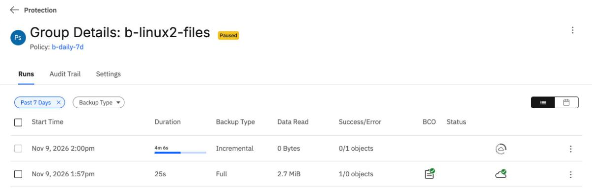
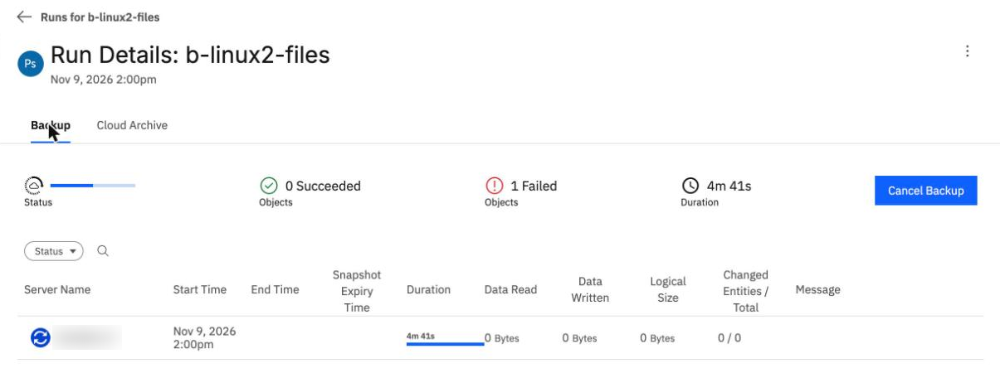
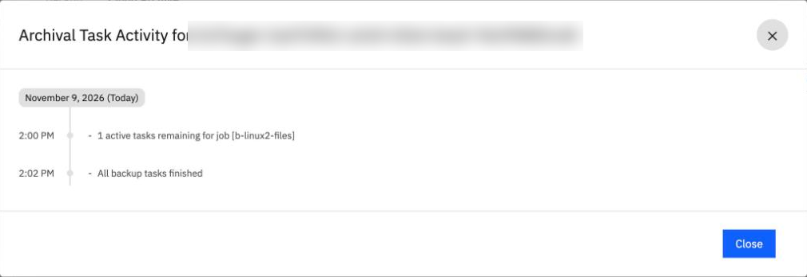
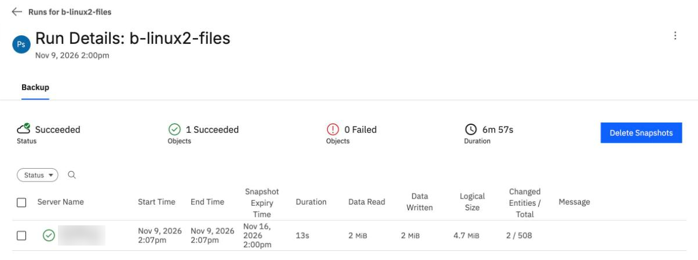

A source reboots, an agent stops
By the end you can say what comes back after a Linux or a Windows server reboots, what a backup does while the Connector Agent is down, and why the console can show 1 Failed on a run that is still running.
Northgate Freight is a made-up company. Tonight it patches two servers: ng-app-01 (Linux) and ng-win-01 (Windows). Both are already protected, and both must reboot.
Every number and screen in this unit comes from real runs in our lab, on 7 October and 9 November 2026, recorded in tutorials B7b and B7c. Server names and addresses were changed to made-up ones, and the server name is blurred in the screenshots.
What comes back by itself
A protected server runs a backup agent. A server registered through a Connector Agent runs a second program, the Connector Agent, which connects the server to BRS. Look at what each one does after a reboot.
Northgate reboots ng-app-01. Half a minute later the backup agent is active. Is the server connected to BRS?
Show the answer
In our lab the backup agent came back and the Connector Agent did not: "connector_agent_exec is not running." This happened on 7 October 2026 with agent 7.3.12, and again on 9 November with agent 7.3.13. IBM's page says: "The Linux Agent must be restarted manually each time the source is rebooted."
Northgate reboots ng-win-01, which also runs SQL Server. What is not running a few minutes later?
Show the answer
Both agents came back. SQL Server showed Stopped at 14:09:23 and again at 14:10:35 on 9 November. Its start type is Automatic (Delayed Start), which Windows starts about two minutes after boot. The tutorial advises you to check your database services too.
How long until it is connected again?
Northgate reboots ng-win-01 and watches the Connector Agent. Then it starts the Linux Connector Agent by hand on ng-app-01. Guess both times.
On Windows, how long after the reboot command does the Connector Agent show as connected?
Show the answer
28 s, then 22 s.It reconnected 28 seconds after the reboot began on 7 October 2026, and 22 seconds after the command on 9 November.
Run Connected after the reboot command 7 October 2026 28 s 9 November 2026 22 s
On Linux in October, how long after Northgate started the Connector Agent by hand did it show as connected?
Show the answer
89 seconds on 7 October 2026. In the run of 9 November the agent showed as connected from the second it was started.
Look at a rebooted Linux server
Run each command in turn. The output is what our Linux server returned after a reboot. The address is a made-up one.
ssh vpcuser@10.0.0.10 'systemctl is-active cohesity-agent; sudo /opt/connector_agent/bin/connector_agent.sh status'
active connector_agent_exec is not running.
The backup agent is active.
The Connector Agent is not running.
The Connector Agent is not running. What will BRS report for this agent's connection?
Show the answer
The next command shows it. The CLI's connector-agent list is the only place in the tutorials that shows this.
ibmcloud backup-recovery connector-agent list --tenant-id $T --xibm-tenant-id $T --output json | jq -c '.connectorAgents[]|{c:.connectivityStatus.isConnected}'
false
isConnected is false.
The console has no page that shows this.
ssh vpcuser@10.0.0.10 'sudo /opt/connector_agent/bin/connector_agent.sh start'
connector_agent_exec started (PID: ...)
Started by hand.
In October it showed as connected 89 s later.
The installer makes no systemd unit and no cron entry for the Connector Agent, checked in our lab. Whether a boot script fixes this is untested in the tutorial.
A backup while the agent is down
Before the reboot, Northgate protected a folder on a second Linux server and set the group to paused. After the reboot the Connector Agent stayed down, and Northgate clicked Run Now. These screens come from the BRS console in our lab on 9 November 2026. Click where you would click. After two misses the right place is marked.

The 2:00pm run has been going for four minutes. Where does the page show that it has read nothing?
Show where
Right. Data Read says 0 Bytes and the run shows 0/1 objects. In our lab the run stayed Running with 0 bytes for 6 minutes, with no message.

You opened the run. The only object is still running. Where does the page count a failure anyway?
Show where
Right. The page says 1 Failed while the only object is still running, and the Message column is empty. Within 5 minutes of the start the Backup tab showed it. Neither screen says that the agent is down.

The Cloud Archive tab's Show Activity window says the work is over. Which line says so?
Show where
Right. "All backup tasks finished" at 2:02 PM, although nothing had been read. This window does not say that the agent is down either.

Northgate started the Connector Agent, and the run finished. The run was requested at 2:00pm. Where does the page show when it began its work?
Show where
Right. The object's Start Time is 2:07pm, when the agent came back, not 2:00pm. The Failed count went back to 0, and the run read 2 MiB. The run waited, and the group was not wedged.
Three questions
A nightly backup starts on a Linux server whose Connector Agent is down. What does the run do?
Show the answer
In our lab the run did not fail. It started its work only when the agent was back. A scheduled backup that starts while the agent is down will wait the same way.
The console shows 1 Failed on a run whose only object is still running. What does that count mean?
Show the answer
It showed during the wait and cleared when the agent came back. The tutorial says to watch connector-agent list as well as the run status.
After a Windows reboot, both agents are back. What else did Northgate find stopped in our lab?
Show the answer
SQL Server's start type is Automatic (Delayed Start), so Windows starts it about two minutes after boot. It was still Stopped at 14:09:23 and 14:10:35.
You know what a reboot does to a source
After a reboot, a Windows server's agents come back in about half a minute in our lab. On Linux the backup agent comes back and the Connector Agent does not, so backups wait, with no error. A run can show 1 Failed while it is only waiting.
Tutorial B7b reboots a Linux and a Windows server and shows what comes back. Tutorial B7c runs a backup while the Connector Agent is down, from the command line and the console.